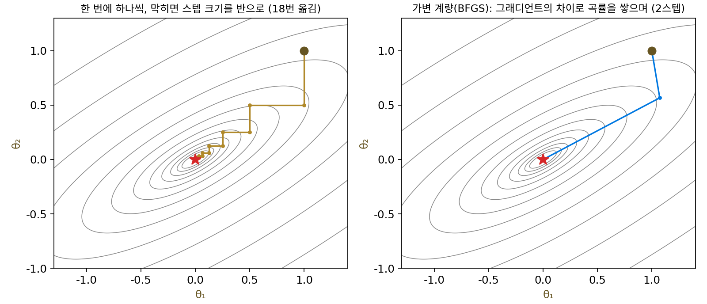
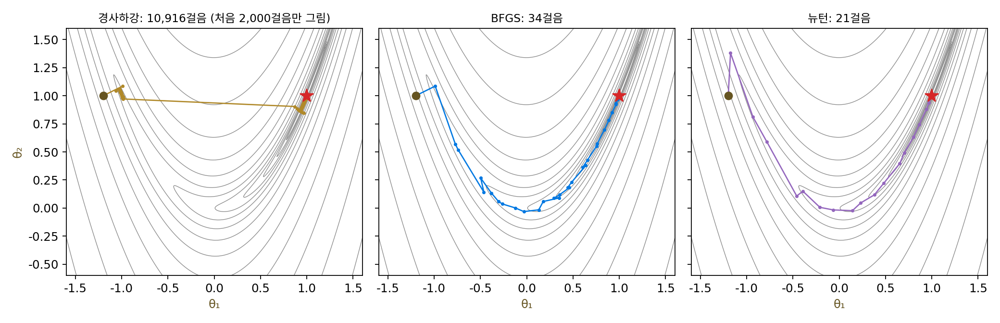
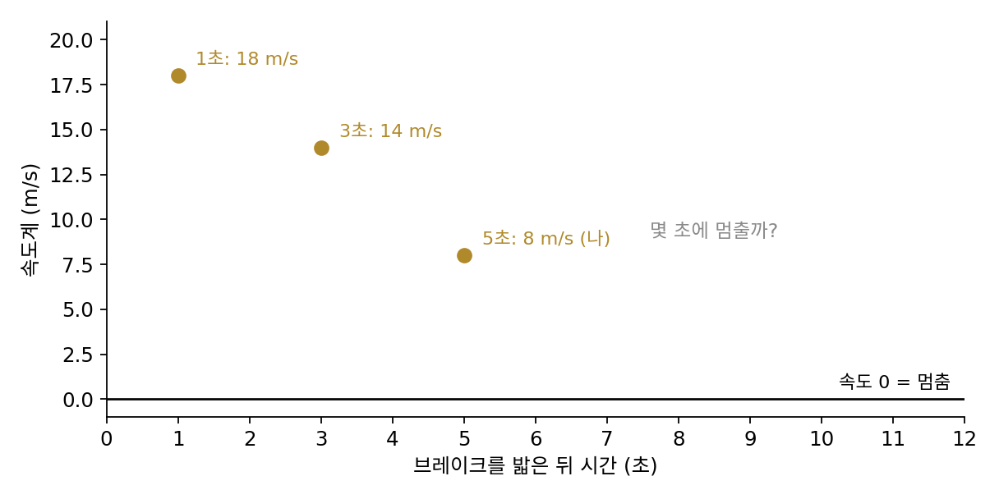
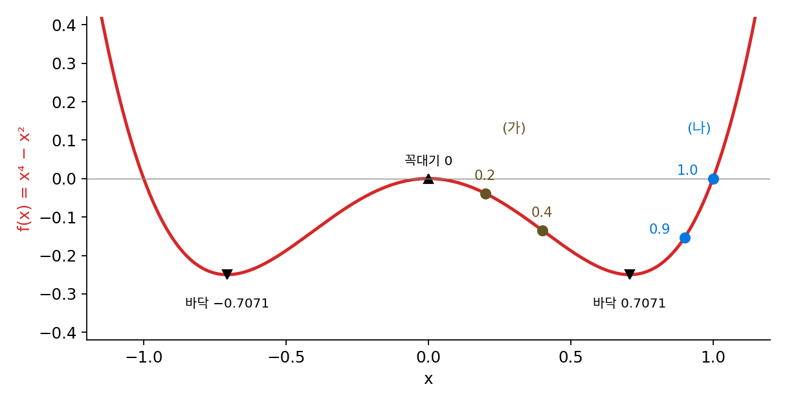
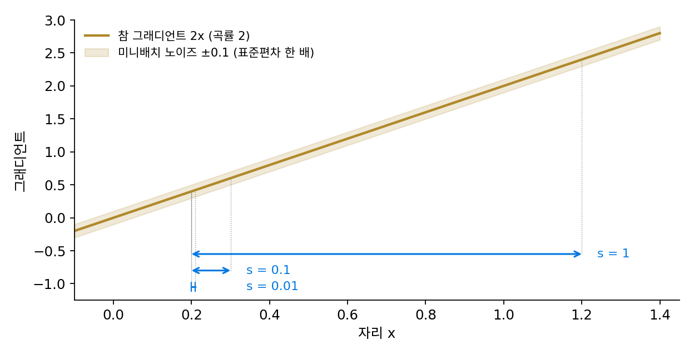

곡률 근사: 준뉴턴에서 K-FAC·Shampoo 까지
이 장의 물음
뉴턴법은 그래디언트에 헤시안(2차 편미분을 모은 행렬)의 역을 곱해, 2차 함수라면 한 스텝에 바닥으로 간다. 길쭉한 골짜기에서 학습률 하나로는 이길 수 없던 조건수(가장 가파른 곡률 ÷ 가장 완만한 곡률)를 헤시안이 한꺼번에 지워 주는 것이다. 그런데 파라미터가 1억 개인 모델이면 헤시안은 1억 × 1억, 칸이 10¹⁶개라서, 숫자 하나에 4바이트를 쓰면 40페타바이트로 저장부터 되지 않는다. 계산할 수 있다 해도 그 행렬의 역을 스텝마다 구할 수는 없다.
그래서 큰 신경망은 헤시안을 직접 쓰지 않는다. Adam 은 그래디언트 제곱의 평균으로 파라미터마다 따로 곡률을 추정해서 값싸지만, 파라미터 둘이 함께 움직일 때만 드러나는 휨, 곧 골짜기가 좌표축과 비스듬히 놓인 경우는 보지 못한다. 그 사이 어디쯤에 「값싸면서도 방향 사이의 얽힘까지 보는」 근사가 있을까?
이 장은 다음 물음에 차례로 답한다.
- 헤시안을 한 번도 계산하지 않고, 걸으면서 얻는 그래디언트만으로 곡률을 알아낼 수 있을까?
- 손실이 제곱 오차의 합이면, 2차 미분을 하지 않고도 곡률을 얻는 지름길이 있을까?
- 분류처럼 손실이 확률로 정해질 때, 곡률 대신 쓸 수 있는 행렬은 무엇이고 그것을 쓰면 무엇이 달라질까?
- 한 층의 곡률 행렬이 너무 크다면, 그 행렬을 작은 행렬 둘로 쪼개 적을 수 있을까? 쪼개면 무엇을 잃을까?
- 층의 종류마다 따로 궁리하지 않고 그래디언트 행렬만 보고 그런 근사를 만들 수 있을까?
준뉴턴: 그래디언트의 차이로 곡률을 쌓는다
뉴턴법은 「그래디언트가 얼마나 빨리 바뀌는가」를 알아야 바닥까지의 거리를 짐작할 수 있기 때문에 헤시안을 원한다. 그런데 경사하강을 하다 보면 스텝마다 그래디언트를 새로 잰다. 두 자리에서 잰 그래디언트의 차이를 두 자리 사이의 거리로 나누면, 그것이 바로 자리를 옮길 때 그래디언트가 바뀌는 비율(2차 미분)의 근삿값이다. 헤시안을 따로 계산하지 않고, 걷는 동안 생기는 그래디언트의 차이만 모아서 곡률을 알아낼 수는 없을까?
역사: 기계가 멈추기 전에 끝내야 했던 물리학자
1950년대 중반 미국 아르곤 국립연구소의 물리학자 윌리엄 데이비던(William Davidon)은 파이 중간자가 양성자에 부딪혀 흩어지는 실험 자료에 이론의 파라미터 여섯 개를 맞추고 있었다. 쓰던 방법은 엔리코 페르미(Enrico Fermi)와 니컬러스 메트로폴리스(Nicholas Metropolis)가 로스앨러모스의 초기 컴퓨터로 하던 것이었다. 파라미터를 한 번에 하나씩 같은 크기만큼 늘리거나 줄여 보고, 어느 쪽으로도 더 나아지지 않으면 스텝 크기를 반으로 줄여 되풀이한다. 느리지만 확실한 방법이었는데, 문제는 아르곤의 컴퓨터 아비닥(Avidac)이었다. 데이비던은 훗날 「몇 천 바이트짜리 변덕스러운 정전기 기억 장치가 예상대로 고장 나기까지의 몇 시간 안에 결과를 얻으려면 더 빨리 수렴해야 했다」고 적었다.
그는 맞춘 파라미터가 얼마나 정확한지 보려고, 최적값에서 파라미터를 조금씩 흔들어 맞음새가 나빠지는 정도로 6 × 6 오차 행렬을 추정했다. 이 행렬이 헤시안의 역의 근사라는 데서 생각이 났다. 탐색이 끝난 뒤가 아니라 탐색하는 동안 이 행렬을 고쳐 나가고, 고친 행렬로 다음 방향을 고르자는 것이다. 그는 이것을 「가변 계량(variable metric) 방법」이라 불렀다. 1957년 『수학·물리학 저널(Journal of Mathematics and Physics)』에 낸 짧은 글은 수렴 증명이 없다는 점 등으로 거절되었고, 심사자는 그의 표기가 「좀 기괴하다」고도 했다. 방법은 1959년 연구소 보고서 ANL-5990으로만 남았다. 그 보고서가 학술지에 실린 것은 서른두 해 뒤인 1991년, 새로 창간한 『SIAM 최적화 학술지』 첫 호의 첫 논문으로서였다.

영국의 로저 플레처(Roger Fletcher)와 마이클 파월(Michael Powell)은 1963년 「빠르게 수렴하는 내리막 방법」에서 이 방법을 다듬어 널리 알렸다. 데이비던은 다른 연구로 옮겨 갔다가, 남들이 그 논문을 알려 준 뒤에야 최적화로 돌아왔다고 적었다. 보고서에 실린 고침 규칙은 세 사람의 머리글자를 따 DFP라 불린다. 그리고 1970년, 찰스 브로이든(Charles Broyden), 플레처, 도널드 골드파브(Donald Goldfarb), 데이비드 샤노(David Shanno) 네 사람이 서로 따로, 같은 해에 더 튼튼한 고침 규칙을 발표했다. 네 사람의 머리글자를 딴 BFGS가 지금까지 가장 널리 쓰이는 꼴이다.

파라미터 여섯 개 맞추는 거면 지금은 라이브러리 함수 한 줄이잖아요. 몇 시간 안에 끝내야 했다는 게 잘 와닿지 않아요.

그 한 줄 안에 든 방법이 이 이야기에서 나왔어요. 데이비던이 쓰던 방법으로 한 번 옮기려면 손실을 몇 번 계산해야 할까요?

음, 파라미터 여섯 개를 하나씩 늘려 보고 줄여 보니까… 운이 나쁘면 열두 번이요. 어느 쪽도 안 나아지면 스텝 크기를 반으로 줄이고 또 되풀이하고요. 그림의 2차원 그릇에서도 18번을 옮겼으니, 여섯 개면 훨씬 많겠네요.

그 계산을 몇 천 바이트짜리 기억 장치로, 몇 시간이면 고장 나는 기계에서 해야 했어요. 게다가 지금 우리가 아는 BFGS 같은 고침 규칙도, 그런 방법이 수렴한다는 증명도 없었어요. 1957년 학술지가 글을 거절한 이유 가운데 하나가 증명이 없다는 점이었고요.

증명도 규칙도 없는데 기계가 고장 나기 전에 끝내야 하니까 일단 써 본 거네요. 그게 서른두 해 뒤에야 학술지에 실렸고요.

그런데 탐색하는 동안 행렬을 고친다고 해도, 한 번 옮길 때 새로 아는 건 두 자리의 그래디언트뿐이잖아요. 그 둘만으로 곡률에 대해 무엇을 알 수 있어요?
그래디언트 둘이면 곡률 하나
가장 작은 경우인 변수 하나에서 시작하자. 곡률이 자리마다 다른 함수 f(x) = x⁴/4 + x²를 고른 것은, 곡률 3x² + 2를 식으로 알아서 근삿값이 맞는지 바로 대 볼 수 있기 때문이다. x = 1에서 그래디언트는 3, x = 0.9에서는 2.529다. 그래디언트가 0.471 줄었고 스텝은 0.1이니, x 한 단위당 그래디언트가 바뀌는 비율은 0.471 ÷ 0.1 = 4.71로, 두 자리의 참 곡률 5와 4.43 사이에 든다. 2차 미분을 한 번도 하지 않았는데 곡률이 나왔다.
이 곡률 근삿값 4.71을 뉴턴법에 그대로 넣으면 다음 자리는 0.9 − 2.529/4.71 = 0.363이다. 새 자리의 그래디언트를 재고, 가장 최근 두 자리로 곡률을 다시 추정하기를 되풀이하면 0.126, 0.0102, 0.000087로 손실의 바닥 x = 0에 다가간다. 오차가 스텝마다 제곱에 가깝게 줄어든다. 이렇게 가장 최근 두 자리의 그래디언트로 곡률을 추정해 뉴턴 스텝을 내딛는 방법을 할선법(secant method)이라 한다.
변수가 여럿이면 스텝 sₖ = xₖ₊₁ − xₖ와 그래디언트의 차이 yₖ = ∇f(xₖ₊₁) − ∇f(xₖ)가 벡터다. 이번에는 숫자 하나가 아니라 행렬 B를 추정해야 하고, 한 스텝이 주는 정보는 「sₖ 방향으로 가니 그래디언트가 yₖ만큼 바뀌더라」 한 줄뿐이다. 그래서 고친 행렬이 적어도 이 한 줄은 맞히도록 하고, 나머지 방향은 지금 행렬을 될 수 있는 대로 덜 바꾼다. BFGS의 고침 규칙은 이렇게 생겼다.
첫 식은 할선 조건(두 점을 잇는 할선의 기울기를 곡률로 삼는다는 조건 / secant condition)이고, 둘째 식은 할선 조건을 지키면서 B를 두 방향으로만 고친다(한 줄을 빼고 한 줄을 더한다). 방향은 뉴턴법처럼 −B⁻¹∇f로 고르고, 그 방향 위에서 손실이 충분히 줄어드는 거리를 찾아 걷는다. 이렇게 헤시안을 계산하지 않고 걸으며 얻은 그래디언트의 차이로 곡률의 추정값을 쌓아 가는 방법을 준뉴턴법 (그래디언트 차이로 곡률 쌓기 / quasi-Newton method)이라 한다.
2차 함수에서 확인해 보자. 조건수 10인 그릇 ½(θ₁² + 10θ₂²)을 30° 돌리면 헤시안은 [[3.25, −3.897], [−3.897, 7.75]]다. B를 단위 행렬로 두고 (1, 1)에서 출발해 스텝마다 그 방향의 최솟값까지 가면, BFGS의 첫 스텝 뒤 B는 [[3.130, −3.917], [−3.917, 7.747]], 둘째 스텝 뒤에는 헤시안과 숫자까지 같아지고 그래디언트는 0이 된다. 파라미터가 n개인 2차 함수에서 이런 방법이 n스텝 안에 끝난다는 것은 데이비던의 1959년 보고서 요약에 적힌 성질이다. 같은 그릇을 학습률 1/L의 경사하강으로 내려가면 바닥에서 0.001 안에 들기까지 69스텝이 걸린다.
2차 함수가 아니면 어떨까? 1960년 하워드 로젠브록(Howard Rosenbrock)이 자동 탐색 방법을 시험하려고 쓴 함수 f(θ₁, θ₂) = (1 − θ₁)² + 100(θ₂ − θ₁²)²는 최소점 (1, 1)이 바나나처럼 휜 좁은 골짜기 안에 있다. 최소점에서 잰 헤시안의 조건수가 2,508이다. (−1.2, 1)에서 출발해 그래디언트의 길이가 10⁻⁵ 아래로 내려가기까지 스텝 수를 세면, 같은 「충분히 줄 때까지 스텝 크기를 반씩 줄이는」 거리 고르기를 쓸 때 경사하강은 10,916스텝, BFGS는 34스텝, 헤시안을 정확히 쓰는 뉴턴법은 21스텝이다.

ML에서: L-BFGS 와 미니배치
BFGS는 n × n 행렬 B를 들고 다녀야 해서 파라미터가 수백만 개면 쓸 수 없다. 1980년 호르헤 노세달(Jorge Nocedal)은 「제한된 저장 공간으로 준뉴턴 행렬 고치기」에서, 행렬을 저장하지 않고 가장 최근 m개의 (s, y) 짝만 기억했다가 스텝마다 그 짝들로 방향을 다시 계산하는 방법을 냈다. 매 스텝 가장 오래된 짝을 버리고 방금 얻은 짝을 넣는다. 1989년 동치 류(Dong C. Liu)와 노세달의 논문이 이 방법을 큰 문제에서 시험해 지금의 L-BFGS(limited-memory BFGS)라는 이름으로 굳혔다. 로젠브록 함수에서 (s, y) 짝을 다섯 개만 기억하는 L-BFGS(사이파이 SciPy 의 구현)는 38스텝이 걸린다.
신경망 학습에서 L-BFGS는 파이토치의 torch.optim.LBFGS(기억하는 (s, y) 짝은 기본 100개)로 들어 있지만, 주로 데이터 전체로 그래디언트를 정확히 재는 작은 문제에서 쓴다. 미니배치마다 그래디언트에 노이즈가 끼면 두 그래디언트의 차이 y가 노이즈에 묻히기 때문이다. 이 일이 얼마나 심한지는 아래 문제 3에서 직접 센다.
문제 1. 브레이크를 밟는 차
브레이크를 밟은 차의 속도계를 1초에 18 m/s, 3초에 14 m/s로 읽었다. (가) 이 두 값만으로 감속을 추정하고, 그 감속이 그대로라면 차가 몇 초에 멈출지 예측하라. (나) 운전자가 점점 세게 밟아 5초에 8 m/s로 읽혔다. 어느 두 값을 써서 다시 예측해야 하는가? 세 가지 짝(1·3초, 3·5초, 1·5초)으로 각각 예측해 비교하라.

(가)는 2초 동안 4 m/s 줄었으니 감속이 2 m/s²예요. 3초에 14 m/s 남았으니 7초 더, 10초에 멈춰요.
(나)도 처음 값부터 다 쓰는 게 정확하지 않을까? 1초와 5초를 쓰면 4초 동안 10 m/s, 감속 2.5라서 5 + 8/2.5 = 8.2초.
3초와 5초만 쓰면요? 그리고 운전자가 점점 세게 밟는다는 걸 떠올려 보세요. 어느 예측이 실제에 가장 가까울까요?
3·5초로는 감속 3, 5 + 8/3 = 7.667초예요. 어, 셋이 다 달라요. 10초, 8.2초, 7.667초.
다 다르면 셋을 평균 내면 되지 않아?
운전자는 지금 1초 때만큼 약하게 밟고 있나요?

아니요, 점점 세게 밟으니까요. 그럼 1초 값은 예전의 약한 감속을 담고 있는 거네요. 제가 처음 값부터 다 쓰자고 한 게 거꾸로였어요. 지금의 감속에 가장 가까운 건 가장 최근 두 값이고, 1초 값까지 섞으면 멈출 때를 늦게 잡아요.

속도를 그래디언트로, 감속을 곡률로, 멈출 때를 「그래디언트가 0이 되는 자리」로 바꿔 읽어 보세요.

그래디언트 둘로 곡률을 추정하고, 그 곡률로 그래디언트가 0이 될 자리를 예측하는 거니까 할선법이네요. 새 값을 잴 때마다 가장 최근 짝으로 다시 추정하는 것도 같고요. 과제 마감까지 남은 시간을 「지난 한 시간 동안 쓴 쪽수」로 짐작하지, 「오늘 아침부터 쓴 평균」으로 짐작하면 늘 틀리더라고요.
문제 2. 볼록하지 않은 곳의 할선
f(x) = x⁴ − x²는 x = ±1/√2 = ±0.7071에 바닥(f = −0.25)이 있고 x = 0에 꼭대기가 있다. (가) x = 0.2와 0.4에서 그래디언트를 재어 할선 곡률을 구하고, 그 곡률로 그래디언트가 0이 될 자리를 예측하라. 예측한 자리에서 손실은 줄었는가? (나) x = 0.9와 1.0으로 할선 곡률과 예측 자리를 구하라. (다) BFGS는 고침 규칙을 쓰기 전에 sᵀy > 0인지 왜 확인하는가?

(가) 그래디언트가 4x³ − 2x이니까 0.2에서 −0.368, 0.4에서 −0.544예요. 할선 곡률은 (−0.544 + 0.368)/0.2 = −0.88. 다음 자리는 0.4 − (−0.544)/(−0.88) = −0.2182요. 그래디언트가 0이 되는 자리를 찾았으니 바닥 쪽으로 간 거죠?
f(0.4)와 f(−0.2182)를 비교해 보세요.
−0.1344에서 −0.0453으로… 손실이 커졌어요. 바닥이 아니라 꼭대기 x = 0 쪽으로 넘어갔네요.
곡률이 음수면 뉴턴 스텝은 「그래디언트가 0인 자리」를 찾되 그게 꼭대기야. (나)는 s = 0.1, y = 0.884라서 곡률이 8.84로 양수고, 다음 자리 0.7738에서 손실이 0에서 −0.2403으로 줄어. 바닥 0.7071 쪽이야.
그럼 sᵀy가 음수인 짝을 BFGS 식에 그대로 넣으면 B는 어떻게 될까요? 식의 마지막 항 분모를 보세요.
분모 yᵀs가 음수면… yyᵀ를 더하는 게 아니라 빼게 돼요. 그러면 B가 양의 정부호(어느 방향으로 가도 휨이 양수인 행렬)를 잃을 수 있겠어요.

양의 정부호가 깨지면 뭐가 문제야? 방향만 하나 구하면 되잖아.
민준 학생이 (가)에서 곡률 −0.88로 한 스텝을 갔을 때 어디로 갔죠?

꼭대기 쪽이요. 그럼 B가 어느 방향으로 휨이 음수가 되면 −B⁻¹∇f도 오르막을 가리킬 수 있네요. 그래서 sᵀy > 0일 때만 고치거나, 거리를 고를 때 sᵀy > 0이 지켜지는 자리까지 가는 거군요. 「볼록이면」이라는 단서를 빼면 정리가 무너지는 반례를 수업에서 만들던 것과 같은 자리네요.

성적이 떨어진 두 시험만 보고 「공부를 덜 할수록 점수가 오른다」고 결론 내리면 큰일 나는 거랑 비슷하네요. 이상한 두 시험으로는 결론을 내지 말아야죠. BFGS가 sᵀy가 음수인 짝을 버리는 것처럼요.
문제 3. 미니배치로 곡률을 재면
(가) 파라미터가 1억 개인 모델을 32비트 실수로 학습한다. BFGS 행렬 B, 짝 10개를 기억하는 L-BFGS, Adam 의 두 버퍼에 드는 메모리를 각각 구하라. (나) 곡률이 2인 손실에서 그래디언트를 미니배치로 재면 노이즈(표준편차 0.1)이 낀다. 두 자리 사이 거리가 s = 1, 0.1, 0.01일 때 할선 곡률 y/s는 어떻게 흩어지는가? (씨앗을 고정한 1만 번 모의 실험)

(가)는 BFGS 행렬이 10⁸ × 10⁸ × 4바이트 = 4 × 10¹⁶바이트, 40페타바이트예요. L-BFGS는 벡터 20개라 8기가바이트, Adam 은 벡터 둘이라 0.8기가바이트. L-BFGS 정도면 GPU 에 들어가니 쓰면 되겠네요.
메모리는 그렇죠. 그럼 (나)로 가 봐요. 학습이 손실의 바닥에 가까워지면 한 스텝의 길이 s는 어떻게 되죠?
점점 작아지죠.
그럼 s를 줄여 가며 모의 실험을 돌려 볼까요?

모의 실험을 돌리면 s = 1일 땐 평균 2.000에 표준편차 0.142로 잘 맞는데, s = 0.1이면 표준편차 1.428, s = 0.01이면 14.14예요. 그때는 할선 곡률이 음수로 나오는 경우가 44.5%나 돼요. 곡률이 2인데요!
잠깐, s = 1인데도 표준편차가 0.142야? 그래디언트 노이즈는 0.1이었잖아.
y는 그래디언트 몇 개로 만들었죠?
두 개요. 두 자리에서 각각 노이즈가 끼니까 차이에서는 √2배로 커지고, 0.1 × √2 = 0.141이에요. 그걸 s로 나누니까 표준편차가 0.141/s고요. 스텝이 작아질수록 곡률 신호 2는 그대로인데 노이즈만 커져요. 문제 2에서 본 것처럼 sᵀy < 0인 짝은 쓸 수도 없고.
그래서 신경망에서 L-BFGS를 쓰려면 같은 미니배치로 두 자리의 그래디언트를 재거나, 미니배치를 아주 크게 키워야 해요. 작은 미니배치로 오래 걷는 보통의 학습과는 잘 맞지 않죠.
메모리만 보고 되겠다고 했는데, 걸림돌은 노이즈였네요. 1분 간격으로 몸무게를 재서 「1분에 0.3kg 늘었다」고 하면 저울의 측정 오차를 잰 거지 살이 찐 게 아닌 것처럼요.